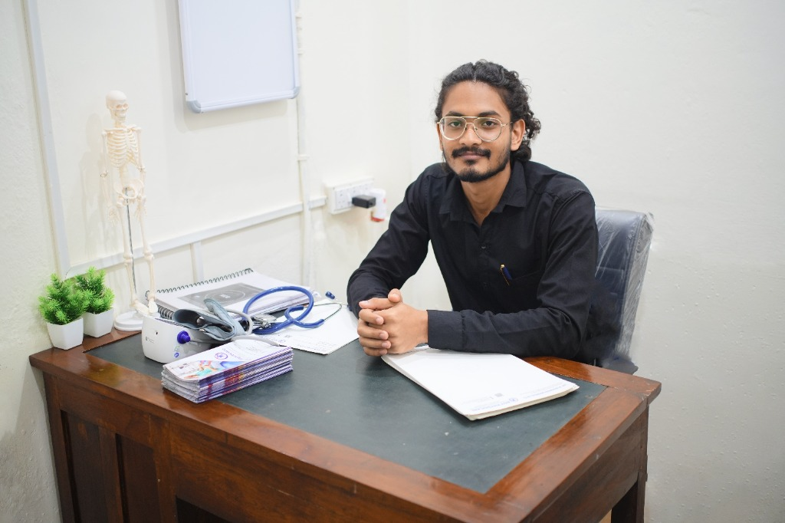

Advanced physiotherapy solutions to help you recover faster and move stronger. Modern techniques meet compassionate care for athletes and individuals alike.

Read Patient Stories →
Years Experience
Happy Patients
Months Clinical Experience
Comprehensive care tailored to your specific recovery goals using evidence-based practices.
Specialized athlete recovery programs designed to return you to peak performance safely.
Gentle and effective recovery plans following surgical procedures to restore mobility.
Evidence-based management to eliminate long-term pain through manual therapy techniques.
Support for patients with neurological conditions to improve balance and coordination.
Expert skill in conducting comprehensive physical examinations, including gait analysis, postural evaluation, muscle strength testing and orthopedic testing.
Success Rate
Hours of Therapy
A simple 3-step approach to getting you back to your best self.
We analyze your movement patterns and identify the source of your discomfort.
A mix of personalized manual therapy and exercises tailored just for you.
Education on ergonomics and lifestyle changes to ensure long-term health.
Transparent, authentic patient experiences at Roy PhysioCare, Kolkata
Our patient review platform is open for everyone! If you have received treatment or consulted with Dr. Subhajit Mukherjee, PT, leave your honest feedback to help future patients make confident healthcare decisions.
Dr. Subhajit Mukherjee is affiliated with Roy PhysioCare located in Ariadaha, Baranagar, Kolkata, and also offers scheduled home visit rehabilitation sessions.
Initial assessments are 60 minutes. Follow-up sessions typically last 45 to 60 minutes depending on your condition.
No primary doctor referral is required. You can book an appointment directly. If you have past X-rays or surgical discharge notes, please bring them along.